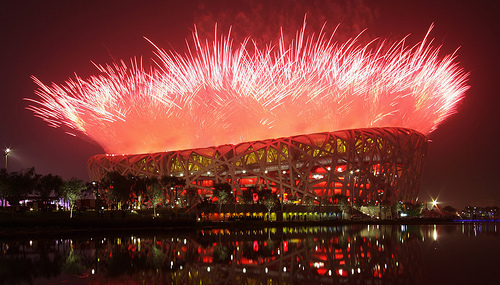

Beijing 2008 Olympics: Civil Engineering
Prior to the August 8 start date of the 2008 Olympics in Beijing, there was already evidence of outstanding performances; not from athletes (their turn will come), but instead from the army of engineers and architects responsible for the design and construction of the Olympic sports venues.
 Beijing National Aquatics Center and Stadium
Beijing National Aquatics Center and Stadium
Form and Function
With high profile building construction, as is always the case for the Olympic sports venues, there is a strong tendency towards visually striking designs. Clearly the visual appeal of a building has to be balanced with the purpose of the building, whether it's to cater for office workers or athletes and spectators. These two aspects are often referred to as 'form' and 'function' and apply across all engineering disciplines.
When either 'form' or 'function' trumps the other, it is usually obvious and sometimes painfully so. You've no doubt seen 'form over function' in chair designs that look visually spectacular but are excruciatingly uncomfortable. The same goes for 'function over form' in the design, say, of Volvo cars in the 1970-80s; they were equal to any car as a means to get from A to B - even superior to most with their advanced safety features - but were unpleasant on the eye. 'Boxy but Good' is an oft used term to describe Volvo's cars, after a fictitious commercial used the phrase in the film Crazy People. A great balance between form and function is ably demonstrated by the visually impressive Dyson vacuum cleaners that use cyclone separators so they don't lose suction due to clogged bags, but I digress.
So where do the Beijing Olympic venues fit in a 'form' and 'function' analysis?
Beijing National Aquatics Center
The Beijing National Aquatics Center, nicknamed the Water Cube, is a stunning building that will host all the swimming (except water polo) and diving events at the 2008 Olympics, scoring high 'form' marks. It has a complex 'bubble wrap'-like exterior, which was inspired by slicing the foam structure of Weaire-Phelan (proposed solution to the most efficient soap bubble foam) into a cuboid. On the building's sides there is no discernable short range pattern to the bubbles. The bubbles can be lit to produce varying colors and patterns, adding to the buildings unique visual style.
Beijing National Aquatics Center (Water Cube)
In terms of 'function' the Water Cube houses what it is thought will be the fastest Olympic pool in the world, due to its 3 meter depth (a meter deeper than most Olympic pools). The bubble cladding is made from a translucent plastic (ETFE) that is projected to reduce energy costs by 30% due to enhanced light and heat transfer compared to glass. The roof is designed to collect rain water for use in the pool and elsewhere in the building. Water is also recycled throughout the building. There is seating for 17,000 spectators, reducing to 6,000 once the Olympics are over.
The Water Cube was designed by PTW Architects, CSCEC (China State Construction Engineering Corporation) International Design and Arup. CSCEC was also responsible for the construction effort.
Beijing National Stadium
The center piece of any Olympics is the athletics (track and field) stadium, which also hosts the opening and closing ceremonies. The Beijing National Stadium, nicknamed the Bird's Nest, is the central stadium for the Beijing Olympics. The stadium is clad in a criss-cross metal structure resembling a bird's nest (hence the nickname). As with the Water Cube, the Bird's Nest doesn't have any repeated short range pattern which tends to encourage observers to linger and search for a pattern. Lighting and fireworks during the opening ceremony made the structure look as if it was on fire with a glowing center. Again high 'form' marks are in order.
Beijing National Stadium (Bird's Nest)
With an eye for both athletes and spectators (all 91,000 of them), the Bird's Nest incorporates plastic panels (made of ETFE) integrated into the outer structure that provide shelter from wind, rain and sun (UV protection). Panels (made of PTFE) integrated into the inner structure enhance the acoustics and help reduce glare and shadows within the stadium. So on paper the stadium appears to be destined for a high 'function' score too.
The Bird's Nest was designed by Herzog & de Meuron, Arup and CSCEC. CSCEC, as with the Water Cube, was responsible for the construction effort.
Conclusion
Of course the easiest way to judge the 'function' of these impressive visual structures is to sit back and enjoy the Games and let the athletes do their thing.
Rest assured that much of the functional capabilities of the structures will have been simulated using Computer-Aided Engineering (CAE) analysis tools well in advance of the construction. For example designing structures to cope with earthquakes is a must in China and these designs were extensively tested with virtual earthquakes.
If the effort and attention to detail on the external structures is anything to go by, then I'm sure we are unlikely to see any stadium malfunctions.
Feedback
Questions? Ideas? Problems?

Recent blog posts
- CFD Simulates Distant Past
- Background on the Caedium v6.0 Release
- Long-Necked Dinosaurs Succumb To CFD
- CFD Provides Insight Into Mystery Fossils
- Wind Turbine Design According to Insects
- Runners Discover Drafting
- Wind Tunnel and CFD Reveal Best Cycling Tuck
- Active Aerodynamics on the Lamborghini Huracán Performante
- Fluidic Logic
- Stonehenge Vortex Revealed as April Fools' Day Distortion Field
 Get our Blog feed
Get our Blog feed